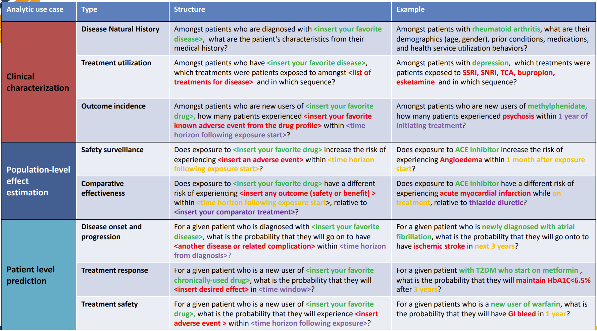

Welcome to my training material test lab!
For an interactive view of the OMOP data dictionary, please visit this link.
Projects Best Suited for Observational Research and OHDSI Network Studies

(This is the exact same table as in the image above only in Markdown)
Analytic Use Cases and Examples
| Analytic use case | Type | Structure | Example |
|---|---|---|---|
| Clinical characterization | Disease Natural History | Amongst patients who are diagnosed with <insert your favorite disease>, what are the patient’s characteristics from their medical history? |
Amongst patients with rheumatoid arthritis, what are their demographics (age, gender), prior conditions, medications, and health service utilization behaviors? |
| Treatment utilization | Amongst patients who have <insert your favorite disease>, which treatments were patients exposed to amongst <list of treatments for disease> and in which sequence? |
Amongst patients with depression, which treatments were patients exposed to SSRI, SNRI, TCA, bupropion, esketamine and in which sequence? | |
| Outcome incidence | Amongst patients who are new users of <insert your favorite drug>, how many patients experienced <insert your favorite known adverse event from the drug profile> within <time horizon following exposure start>? |
Amongst patients who are new users of methylphenidate, how many patients experienced psychosis within 1 year of initiating treatment? | |
| Population-level effect estimation | Safety surveillance | Does exposure to <insert your favorite drug> increase the risk of experiencing <insert an adverse event> within <time horizon following exposure start>? |
Does exposure to ACE inhibitor increase the risk of experiencing Angioedema within 1 month after exposure start? |
| Comparative effectiveness | Does exposure to <insert your favorite drug> have a different risk of experiencing <insert any outcome (safety or benefit)> within <time horizon following exposure start>, relative to <insert your comparator treatment>? |
Does exposure to ACE inhibitor have a different risk of experiencing acute myocardial infarction while on treatment, relative to thiazide diuretic? | |
| Patient level prediction | Disease onset and progression | For a given patient who is diagnosed with <insert your favorite disease>, what is the probability that they will go on to have <another disease or related complication> within <time horizon from diagnosis>? |
For a given patient who is newly diagnosed with atrial fibrillation, what is the probability that they will go onto to have ischemic stroke in next 3 years? |
| Treatment response | For a given patient who is a new user of <insert your favorite chronically-used drug>, what is the probability that they will <insert desired effect> in <time window>? |
For a given patient with T2DM who start on metformin, what is the probability that they will maintain HbA1C<6.5% after 3 years? | |
| Treatment safety | For a given patient who is a new user of <insert your favorite drug>, what is the probability that they will experience <insert adverse event> within <time horizon following exposure>? |
For a given patients who is a new user of warfarin, what is the probability that they will have GI bleed in 1 year? |
Incremental Loading
Incremental loading in the context of OHDSI refers to the process of adding new or updated data to an existing OHDSI database without the need to completely rebuild or refresh the entire dataset. This can be particularly useful for large datasets where full loads can be time-consuming and inefficient. The process involves extracting only the changes since the last load and then transforming and loading this delta of data into the existing OMOP Common Data Model (CDM) used by OHDSI tools.
For instance, in the development of an ETL (Extract, Transform, Load) process for the bulk and incremental load of German patient data into the OMOP CDM using FHIR as referenced by OHDSI, it suggests that the incremental loading is an essential part of keeping the database up-to-date in an efficient manner. OHDSI Symposium Showcase #44
This is also described by Dr. DuWayne Willett, CMIO of UTSW, at around minute 30 of this video:

…and in this OHDSI symposium presentation:  .
.
The Collaboration Process
This is just an example of the kinds of diagrams we can make
flowchart TD
A[PersonA receives a research request]
B[Person/group B sets up a meeting]
C[Iterative biomedical query mediation process begins]
D[Project outline is created and signed off by all parties]
E[Voucher/payment/estimate is produced including resource and timeframe]
F[Department head reviews/signs off on the voucher request]
G[Work begins]
H[First draft is produced with a notebook outlining results]
I[Meeting is scheduled to review results of the notebook]
J[Necessary modifications are made and returned to the researcher]
K[End of Process]
A --> B
B --> C
C --> D
D --> E
E --> F
F --> G
G --> H
H --> I
I --> J
J -.->|If modifications needed| G
J -->|If complete| KCurrent CDM

Source: OHDSI Common Data Model
Commonly Used CDM Tables Overview
The OMOP common data model (CDM) is a relational database made up of different tables that relate to each other by foreign keys (XXXX_ID values; e.g., PERSON_ID or PROVIDER_ID). The OMOP tables in your data export are as follows:
| Table | Description |
|---|---|
| Person | Contains basic demographic information describing a participant, including biological sex, birth date, race, and ethnicity. |
| Visit_occurrence | Captures encounters with healthcare providers or similar events. Contains the type of visit a person has (outpatient care, inpatient care, or long-term care), as well as the date and duration information. Rows in other tables can reference this table, for example, condition_occurrences related to a specific visit. |
| Condition_occurrence | Indicates the presence of a disease or medical condition stated as a diagnosis, a sign, or symptom, which is either observed by a provider or reported by the patient. |
| Drug_exposure | Captures records about the utilization of a medication. Drug exposures include prescription and over-the-counter medicines, vaccines, and large-molecule biologic therapies. Radiological devices ingested or applied locally do not count as drugs. Drug exposure is inferred from clinical events associated with orders, prescriptions written, pharmacy dispensing, procedural administrations, and other patient-reported information. |
| Measurement | Contains both orders and results of a systematic and standardized examination or testing of a participant or participant’s sample, including laboratory tests, vital signs, quantitative findings from pathology reports, etc. |
| Procedure_occurrence | Contains records of activities or processes ordered by or carried out by a healthcare provider on the patient to have a diagnostic or therapeutic purpose. |
| Observation | Captures clinical facts about a person obtained in the context of an examination, questioning, or a procedure. Any data that cannot be represented by another domain, such as social and lifestyle facts, medical history, and family history, are recorded here. |
| Device_exposure | Captures information about a person’s exposure to a foreign physical object or instrument which is used for diagnostic or therapeutic purposes. Devices include implantable objects, blood transfusions, medical equipment and supplies, other instruments used in medical procedures, and material used in clinical care. |
| Death | Contains the clinical events surrounding how and when a participant dies. |
graph LR
ICD9("ICD9") -->|Transformation to OMOP CDM| SNOMED("STANDARD<br>Vocabulary Concept Code<br>SNOMED")
ICD10("ICD10") -->|Transformation to OMOP CDM| SNOMED| Domain | Source Vocabulary | Standard Vocabulary |
|---|---|---|
| Conditions | ICD9, ICD10 | SNOMED |
| Measurements | LOINC or institutional specific codes | LOINC |
| Drugs | NDC | RxNORM |
| Procedures | ICD9, ICD10, CPT | SNOMED |
- ICD = International Classification of Diseases
- SNOMED = Systematized Nomenclature of Medicine
- LOINC = Logical Observation Identifiers Names and Codes
- NDC = National Drug Code
- CPT = Current Procedural Terminology
Analysis Tools
R, SQL, Python, or any preferred data analysis software. Examples provided below are for R and SQL. [The Book of OHDSI Chapter 9] (https://ohdsi.github.io/TheBookOfOhdsi/SqlAndR.html) provides an overview of analysis of OHDSI data in R and SQL; note that you will not be able to avail yourselves of OHDSI software tools when analyzing your exported data for the reason explained above. < ## Jupyter Notebooks and programming [Source:NIH All of US Study] (https://support.researchallofus.org/hc/en-us/articles/360039690191-Jupyter-Notebooks-and-programming)
Below you will find links to helpful resources on using Jupyter Notebooks. Below you will find links to some of the most helpful resources that we have created and/or found on using Jupyter Notebooks. While we can’t teach you how to program, we have identified some online resources that can help get you started. ### OHDSI Resources Hello! Please familiarize yourself with the following tools and resources which will help you throughout this course and your OHDSI journey.
Check out the OHDSI Forums Introduce yourself on the “Welcome to OHDSI” thread.
Bookmark The Book of OHDSI
Join the OHDSI Microsoft Teams environment.
Check out the MIMIC-IV demo data set in OMOP CDM format!
Register with EHDEN Academy
Visit the Atlas Demo and Athena.
Bookmark the OHDSI YouTube tutorials and workshops
Visit the OHDSI Community Dashboard
Bookmark OMOP Common Data Model (ohdsi.github.io)
Learn about GitHub if you don’t already know.
Plan to attend an OHDSI Community call
Learn about OHDSI Workgroups
Follow OHDSI on social media: Twitter LinkedIn
Subscribe to the OHDSI Newsletter
Learn about past and upcoming OHDSI events
Learn about OHDSI software
Look up individual concepts in Athena
Check out useful OHDSI-related documentation here: NIH ALL of US OMOP Documentation
Recommended Trainings
OHDSI Community
Broadsea3.0
By: Lee Evans

Tufts Bridge2AI Standards Module
June 15, 2023:
Data Quality Dashboard
By: Jared Houghtaling

July 6, 2023:
Data Quality Dashboard output demo
By: Jared Houghtaling

July 13, 2023:
Achilles output demo
By: Jared Houghtaling

July 27, 2023:
Flowsheet follow-up
By: Polina Talapova & Jared Houghtaling

August 3, 2023:
OMOP Standardized Vocabularies - Part 1
By: Jared Houghtaling and Polina Talapova

August 17, 2023:
OMOP Standardized Vocabularies - Part 2
By: Polina Talapova

August 24, 2023:
How to download and set-up a DDL (Demo)
By: Jared Houghtaling

August 31, 2023:
Demo of WhiteRabbit and RabbitInAHat
By: Jared Houghtaling

September 7, 2023:
ARES usefulness for ETL at Tufts
By: Jared Houghtaling

September 14, 2023:
Google form introduction for site progress tracking
By: Jared Houghtaling

September 21, 2023:
Sample ETL Process
By: Jared Houghtaling

October 12, 2023:
Google Form for Site Progress Tracking
With Jared Houghtaling and Andrew Williams

October 26, 2023:
Review and Prioritization of DQD Results, and Discussion of DQD Issue Severity
With Jared Houghtaling

November 2, 2023:
Principles of Mapping and Vocab Gaps Identification
With Polina Talapova

November 9, 2023:
Usagi & STCM Demo
With Polina Talapova & Jared Houghtailing

Python, SQL, and R Programming Resources
Software Carpentry is a website that provides free online lessons to researchers wanting to enhance their programming skills for data analysis. This website offers free online lessons on a variety of useful topics including:
We have included additional resources for help with programming below.
Analysis with SQL
The OMOP Query Library is a library of commonly-used SQL queries for the OMOP Common Data Model (CDM).
Analysis with R
Below are some sample R queries that demonstrate how to read in OMOP tables from CSV files, join them based on the person_id and visit_occurrence_id fields, and search for specific criteria.
Note: Adjust the file paths and column names accordingly based on the actual structure and location of your CSV files. The queries below are a generic representation and may need adjustments based on the specifics of your data set.
Reading CSV files into R data frames:
# Read the CSV files into R data frames
person_df <- read.csv("path_to_person_table.csv", header=TRUE, stringsAsFactors=FALSE)
visit_occurrence_df <- read.csv("path_to_visit_occurrence_table.csv", header=TRUE, stringsAsFactors=FALSE)
condition_occurrence_df <- read.csv("path_to_condition_occurrence_table.csv", header=TRUE, stringsAsFactors=FALSE)Join tables based on person_id:
When a person has multiple visits in the visit_occurrence table, joining the person table with the visit_occurrence table will result in multiple rows for that person, each corresponding to a different visit. This is a standard one-to-many join operation.
## Join person with visit_occurrence on 'person_id'
person_visit_df <- merge(person_df, visit_occurrence_df, by="person_id")Joining the Person-Visit table with the Condition Occurrence table:
# Join the person-visit result with condition_occurrence on both 'person_id' and 'visit_occurrence_id'
full_df <- merge(person_visit_df, condition_occurrence_df, by=c("person_id", "visit_occurrence_id"))Search by a list of person_ids:
# Define a list of person_ids to search for
search_person_ids <- c(1, 2, 3, 4, 5)
# Filter the data frame to only include rows with person_ids in the list
filtered_by_person_df <- subset(full_df, person_id %in% search_person_ids)Search by a specific condition concept code:
# Define a specific condition concept code to search for
search_condition_concept_id <- 1234567
# Filter the data frame to only include rows with the specified condition concept code
filtered_by_condition_df <- subset(full_df, condition_concept_id == search_condition_concept_id)Search by a date range:
# Define a date range to search for
start_date <- as.Date("2020-01-01")
end_date <- as.Date("2020-12-31")
## Filter the data frame to only include rows within the date range
filtered_by_date_df <- subset(full_df, visit_start_date >= start_date & visit_start_date <= end_date)